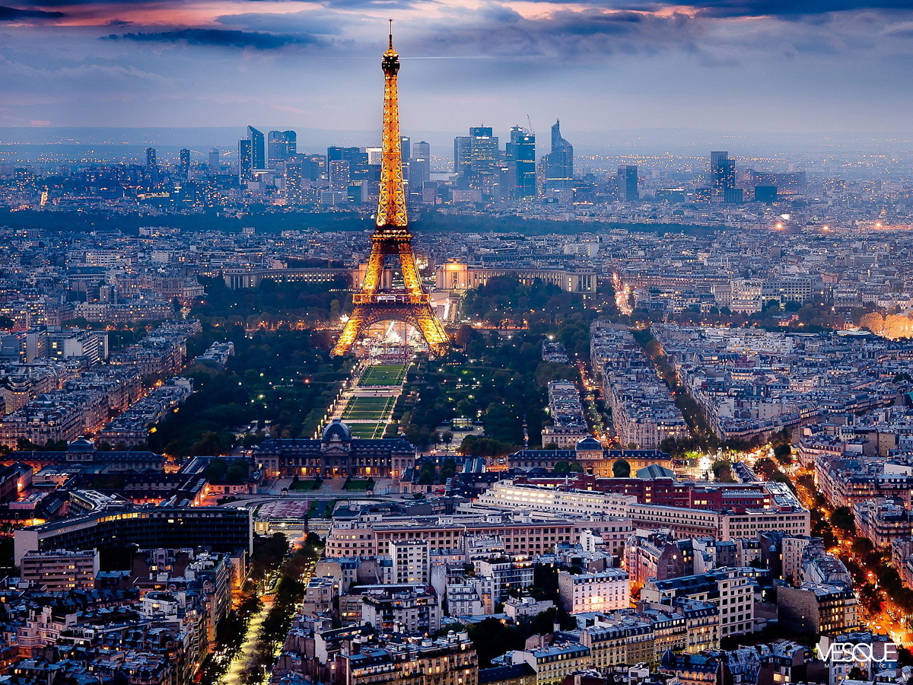

París
París, la capital de Francia, es conocida como la "Ciudad de la Luz" y es famosa por su arquitectura impresionante, su exquisita cocina, su arte y su romance. Alberga algunos de los monumentos más icónicos del mundo, como la Torre Eiffel, la Catedral de Notre-Dame y el Museo del Louvre, que alberga obras maestras como la Mona Lisa. París también es conocida por sus elegantes bulevares, sus encantadores cafés y su moda de vanguardia.
